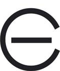

16
Sábado
Castilla La Mancha Media
(18:00)
Ver corrida de toros
Guadalajara
Feria de la Antigua
Toros de
José Vazquez
Procedencia D. Juan Pedro Domecq y Díez
El Fandi
Cayetano
Ginés Marín
Canal Sur Televisión
(18:00)
Ver corrida de toros
Écija (Sevilla)

Toros de
Julio de La Puerta
Procedencia D. Juan Pedro Domecq y Díez
'Ganadería Marqués de Domecq'
algo puro del Duque de Veragua
(de casta vazqueña)
Manuel Escribano
Borja Jiménez
EL Astigitano
 Castilla La Mancha Media Castilla La Mancha Media
Castilla La Mancha Media Castilla La Mancha Media  Ver corrida de toros
Ver corrida de toros

 Canal Sur Televisión
Canal Sur Televisión  Ver corrida de toros
Ver corrida de toros